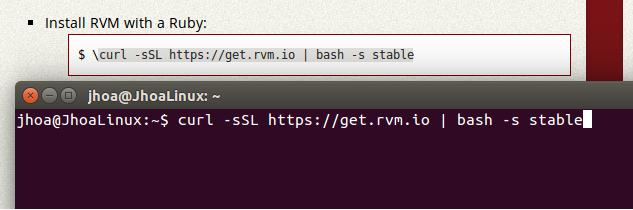
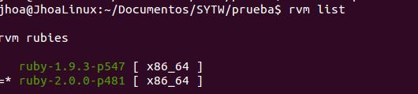
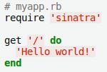

Instalar RVM
Antes de instalar RVM necesitaremos instalar algunos paquetes:
$ sudo apt-get install build-essential git-core curl
Ahora instalaremos RVM , como nos indica en su pagina web

Podemos ver la version de RVM con el comando "rvm -v"
Instalar Ruby
$ rvm install 2.0.0
Si tenemos varias versiones instaladas, con el comando [[$ rvm use ruby "NUM_VERSION" --default]] nos pasaremos a la version que queramos utilizar.
Con el comando [[$ rvm list]] veremos las versiones de Ruby instaladas

Actualizar gemas
Instalar gem Twitter.
Instalar y comprobar la gema Sinatra.

3. Ejecutamos ***[[$ ruby myapp.rb]]*** y pruebo en el navegador: ***[[http://localhost:4567]]***
Jhoanmary Prz Fariña